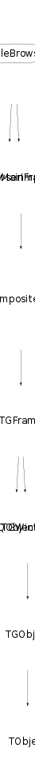

class TGFileBrowser: public TGMainFrame, public TBrowserImp
TGFileBrowser System file browser, used as TRootBrowser plug-in. This class is the real core of the ROOT browser.
Function Members (Methods)
public:
protected:
| static Int_t | TQObject::CheckConnectArgs(TQObject* sender, TClass* sender_class, const char* signal, TClass* receiver_class, const char* slot) |
| static Bool_t | TQObject::ConnectToClass(TQObject* sender, const char* signal, TClass* receiver_class, void* receiver, const char* slot) |
| static Bool_t | TQObject::ConnectToClass(const char* sender_class, const char* signal, TClass* receiver_class, void* receiver, const char* slot) |
| void | CreateBrowser() |
| virtual void | TObject::DoError(int level, const char* location, const char* fmt, va_list va) const |
| virtual void | TGFrame::DoRedraw() |
| virtual void | TGFrame::Draw3dRectangle(UInt_t type, Int_t x, Int_t y, UInt_t w, UInt_t h) |
| static Time_t | TGFrame::GetLastClick() |
| TString | TGMainFrame::GetMWMfuncString() const |
| TString | TGMainFrame::GetMWMinpString() const |
| TString | TGMainFrame::GetMWMvalueString() const |
| TString | TGFrame::GetOptionString() const |
| const TGResourcePool* | TGFrame::GetResourcePool() const |
| virtual void* | TGFrame::GetSender() |
| virtual const char* | TQObject::GetSenderClassName() const |
| void | TObject::MakeZombie() |
| TGWindow& | TGWindow::operator=(const TGWindow& tgw) |
| virtual void | TGFrame::StartGuiBuilding(Bool_t on = kTRUE) |
Data Members
public:
| enum TGMainFrame::[unnamed] { | kDontCallClose | |
| }; | ||
| enum TGFrame::[unnamed] { | kDeleteWindowCalled | |
| }; | ||
| enum TGWindow::EEditMode { | kEditEnable | |
| kEditDisable | ||
| kEditDisableEvents | ||
| kEditDisableGrab | ||
| kEditDisableLayout | ||
| kEditDisableResize | ||
| kEditDisableHeight | ||
| kEditDisableWidth | ||
| kEditDisableBtnEnable | ||
| kEditDisableKeyEnable | ||
| }; | ||
| enum TObject::EStatusBits { | kCanDelete | |
| kMustCleanup | ||
| kObjInCanvas | ||
| kIsReferenced | ||
| kHasUUID | ||
| kCannotPick | ||
| kNoContextMenu | ||
| kInvalidObject | ||
| }; | ||
| enum TObject::[unnamed] { | kIsOnHeap | |
| kNotDeleted | ||
| kZombie | ||
| kBitMask | ||
| kSingleKey | ||
| kOverwrite | ||
| kWriteDelete | ||
| }; |
protected:
| Pixel_t | TGFrame::fBackground | frame background color |
| TList* | TGMainFrame::fBindList | list with key bindings |
| Int_t | TGFrame::fBorderWidth | frame border width |
| TGHorizontalFrame* | fBotFrame | Bottom horizontal frame |
| TBrowser* | TBrowserImp::fBrowser | TBrowser associated with this implementation |
| const TGPicture* | fCachedPic | Cached picture |
| TString | fCachedPicName | Cached picture name |
| TGCanvas* | fCanvas | Canvas for the list tree |
| TString | TGMainFrame::fClassName | WM class name |
| TGClient* | TGObject::fClient | Connection to display server |
| Long_t | fCnt | Counters for keys inside a Root file |
| TContextMenu* | fContextMenu | pointer to context menu |
| TGListTreeItem* | fCurrentDir | Current (list tree) directory |
| Int_t | TGFrame::fDNDState | EDNDFlags |
| Atom_t* | TGMainFrame::fDNDTypeList | handles DND types |
| Bool_t | fDblClick | kTRUE if user double-clicked on a list tree item |
| TSystemDirectory* | fDir | Actual (selected) system directory |
| TGComboBox* | fDrawOption | Draw options combobox |
| UInt_t | TGWindow::fEditDisabled | flags used for "guibuilding" |
| UInt_t | TGFrame::fEventMask | currenty active event mask |
| TGFrameElement* | TGFrame::fFE | pointer to frame element |
| TSystemFile* | fFile | Actual (selected) system file |
| const TGPicture* | fFileIcon | System files icon |
| TGComboBox* | fFileType | File type combobox |
| TRegexp* | fFilter | Regular expression used to filter files |
| TGPictureButton* | fFilterButton | "Filter" button |
| TString | fFilterStr | Filter expression string |
| map<TGListTreeItem*,const char*> | fFilteredItems | List of filtered list-tree items. |
| Int_t | fGroupSize | total number of items when icon box switched to "global view" mode |
| Bool_t | fGrouped | kTRUE if Root file content (keys) is grouped |
| UInt_t | TGFrame::fHeight | frame height |
| TString | TGMainFrame::fIconName | icon name |
| TString | TGMainFrame::fIconPixmap | icon pixmap name |
| Handle_t | TGObject::fId | X11/Win32 Window identifier |
| Bool_t | TGCompositeFrame::fLayoutBroken | no layout manager is used |
| TGLayoutManager* | TGCompositeFrame::fLayoutManager | layout manager |
| TList* | TGCompositeFrame::fList | container of frame elements |
| TGListTreeItem* | fListLevel | Current list tree level |
| TList* | TQObject::fListOfConnections | ! list of connections to this object |
| TList* | TQObject::fListOfSignals | ! list of signals from this object |
| TGListTree* | fListTree | Main list tree |
| UInt_t | TGMainFrame::fMWMFuncs | MWM functions |
| UInt_t | TGMainFrame::fMWMInput | MWM input modes |
| UInt_t | TGMainFrame::fMWMValue | MWM decoration hints |
| Bool_t | TGCompositeFrame::fMapSubwindows | kTRUE - map subwindows |
| UInt_t | TGFrame::fMaxHeight | maximal frame height |
| UInt_t | TGFrame::fMaxWidth | maximal frame width |
| UInt_t | TGFrame::fMinHeight | minimal frame height |
| UInt_t | TGFrame::fMinWidth | minimal frame width |
| Int_t | TGCompositeFrame::fMustCleanup | cleanup mode (see EFrameCleanup) |
| Long_t | fNKeys | |
| TString | TGWindow::fName | name of the window used in SavePrimitive() |
| Bool_t | TGWindow::fNeedRedraw | kTRUE if window needs to be redrawn |
| TRootBrowser* | fNewBrowser | Pointer back to the Browser |
| UInt_t | TGFrame::fOptions | frame options |
| const TGWindow* | TGWindow::fParent | Parent window |
| TGPictureButton* | fRefreshButton | "Refresh" button |
| TString | TGMainFrame::fResourceName | WM resource name |
| TGListTreeItem* | fRootDir | Root (list tree) directory |
| const TGPicture* | fRootIcon | Root files icon |
| Bool_t | TBrowserImp::fShowCycles | Show object cycle numbers in browser |
| Bool_t | fShowHidden | kTRUE to display hidden files |
| Bool_t | TQObject::fSignalsBlocked | ! flag used for suppression of signals |
| TGPictureButton* | fSortButton | "Sort" button |
| list<TGListTreeItem*> | fSortedItems | List of sorted list-tree items. |
| TGHorizontalFrame* | fTopFrame | Top horizontal frame |
| UInt_t | TGMainFrame::fWMHeight | WM height |
| UInt_t | TGMainFrame::fWMHeightInc | WM height increments |
| EInitialState | TGMainFrame::fWMInitState | WM initial state |
| UInt_t | TGMainFrame::fWMMaxHeight | WM max height |
| UInt_t | TGMainFrame::fWMMaxWidth | WM max width |
| UInt_t | TGMainFrame::fWMMinHeight | WM min height |
| UInt_t | TGMainFrame::fWMMinWidth | WM min width |
| UInt_t | TGMainFrame::fWMWidth | WM width |
| UInt_t | TGMainFrame::fWMWidthInc | WM width increments |
| Int_t | TGMainFrame::fWMX | WM x position |
| Int_t | TGMainFrame::fWMY | WM y position |
| UInt_t | TGFrame::fWidth | frame width |
| TString | TGMainFrame::fWindowName | window name |
| Int_t | TGFrame::fX | frame x position |
| Int_t | TGFrame::fY | frame y position |
| static Bool_t | TQObject::fgAllSignalsBlocked | flag used for suppression of all signals |
| static const TGGC* | TGFrame::fgBckgndGC | |
| static const TGGC* | TGFrame::fgBlackGC | |
| static Pixel_t | TGFrame::fgBlackPixel | |
| static Int_t | TGWindow::fgCounter | counter of created windows in SavePrimitive |
| static Window_t | TGFrame::fgDbw | |
| static Int_t | TGFrame::fgDbx | |
| static Int_t | TGFrame::fgDby | |
| static Pixel_t | TGFrame::fgDefaultFrameBackground | |
| static TGLayoutHints* | TGCompositeFrame::fgDefaultHints | default hints used by AddFrame() |
| static Pixel_t | TGFrame::fgDefaultSelectedBackground | |
| static const TGGC* | TGFrame::fgHilightGC | |
| static Bool_t | TGFrame::fgInit | |
| static UInt_t | TGFrame::fgLastButton | |
| static Time_t | TGFrame::fgLastClick | |
| static const TGGC* | TGFrame::fgShadowGC | |
| static UInt_t | TGFrame::fgUserColor | |
| static const TGGC* | TGFrame::fgWhiteGC | |
| static Pixel_t | TGFrame::fgWhitePixel |
Class Charts
{kind=link}
{kind=link}
{kind=link}
{kind=link}

Function documentation
TGFileBrowser(const TGWindow* p, TBrowser* b = 0, UInt_t w = 200, UInt_t h = 400)
TGFileBrowser constructor.
void GetFilePictures(const TGPicture** pic, Int_t file_type, Bool_t is_link, const char* name)
Determine the file picture for the given file type.
void AddFSDirectory(const char* entry, const char* path = 0, Option_t* opt = "")
Add file system directory in the list tree.
void CheckRemote(TGListTreeItem* item)
Check if the current list tree item points to a remote object.
Bool_t CheckFiltered(TGListTreeItem* item, Bool_t but = kFALSE)
Check if there is a filter active on the children of the list tree item. If the but argument is true, the "filter" button state is set accordingly, and its tooltip will show the filter used.
Bool_t CheckSorted(TGListTreeItem* item, Bool_t but = kFALSE)
Check if the list tree item children are alphabetically sorted. If the but argument is true, the "sort" button state is set accordingly.
Long_t XXExecuteDefaultAction(TObject* obj)
Execute default action for selected object (action is specified in the $HOME/.root.mimes or $ROOTSYS/etc/root.mimes file.
char * FormatFileInfo(const char* fname, Long64_t size, Long_t modtime)
Format file information to be displayed in the tooltip.
void GetObjPicture(const TGPicture** pic, TObject* obj)
Retrieve icons associated with class "name". Association is made
via the user's ~/.root.mimes file or via $ROOTSYS/etc/root.mimes.
void PadModified()
Slot used to switch to the tab containing the current pad/canvas (gPad) used e.g. when drawing a histogram by double-clicking on its list tree item in a root file.
void RequestFilter()
Open a dialog box asking for a string to be used as filter (regexp), and add an entry in the map of filtered entries. Entering "*" or empty string ("") will disable filtering on the current list tree item.